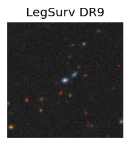
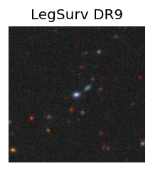
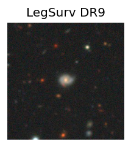
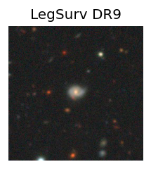

Candidate List 20260110Previous Day Next Day
Section 1: New Sources (age<1d) Section 2: Old (1-5d) sources observed last nightplaceholder
Section 1: New Afterglow/FBOT Cands Last Night (0)
Section 2: Older Sources Observed Last Night (4)
0. ZTF26aaaagat (FBOT?) [Back to Top] [Share] [Trigger Swift] [Fritz] [Lasair]RA, Dec: 10.39897, -5.07067 0h41m35.75s, -5d-4m-14.40sGalactic (l, b): 116.42841, -67.81805 ext(g-r) = 0.062
 

TESS: Sectors [ 3 30 42 43 70 97]
SDSS (10 arcsec):Found SDSS phot-z: z=0.23; peak abs mag = -22.11
PS1: 0 sources in 3 arcsec
LegacySurvey: 1 sources in 3 arcsec Closest: d = 0.38 arcsec, 153.8 deg (east of north) photoz=0.12 (68% bounds 0.11, 0.15), type=SER peak abs mag = -20.34 (68% bounds -20.07, -20.87)

Extinction-corrected gr color:
From alerts: -0.23 +/- 0.08 mag
Rise Rate:
g: 0.31 mag/day
r: 0.1 mag/day
i: -99 mag/day
Fade Rate:
g: -99 mag/day
r: -99 mag/day
i: -99 mag/day
1. ZTF26aaacskq (Afterglow?) [Back to Top] [Share] [Trigger Swift] [Fritz] [Lasair]RA, Dec: 155.87203, 54.00093 10h23m29.29s, 54d 0m3.34sGalactic (l, b): 157.88345, 51.88248 ext(g-r) = 0.011

TESS: Sectors [48 75]
SDSS (10 arcsec):Found SDSS phot-z: z=0.42; peak abs mag = -23.27
PS1: 0 sources in 3 arcsec
LegacySurvey: 1 sources in 3 arcsec Closest: d = 6.95 arcsec, 89.2 deg (east of north) photoz=0.26 (68% bounds 0.16, 0.57), type=REX peak abs mag = -22.03 (68% bounds -20.89, -24.03)

Extinction-corrected gr color:
From alerts: 0.84 +/- 99 mag
Rise Rate:
g: 0.15 mag/day
r: 0.13 mag/day
i: -99 mag/day
Fade Rate:
g: 17.1 mag/day
r: -99 mag/day
i: -99 mag/day
2. ZTF26aaaecbl (FBOT?) [Back to Top] [Share] [Trigger Swift] [Fritz] [Lasair]RA, Dec: 46.98118, -10.58051 3h 7m55.48s, -10d-34m-49.84sGalactic (l, b): 192.29671, -53.89849 ext(g-r) = 0.073
 

TESS: Sectors [ 4 31 108 109]
PS1: 0 sources in 3 arcsec
LegacySurvey: 1 sources in 3 arcsec Closest: d = 0.48 arcsec, 0.3 deg (east of north) photoz=0.15 (68% bounds 0.14, 0.19), type=SER peak abs mag = -19.58 (68% bounds -19.32, -20.03)

Rise Rate:
g: -99 mag/day
r: 0.66 mag/day
i: -99 mag/day
Fade Rate:
g: -99 mag/day
r: -99 mag/day
i: -99 mag/day
3. ZTF26aaaefvl (Afterglow?FBOT?) [Back to Top] [Share] [Trigger Swift] [Fritz] [Lasair]RA, Dec: 154.68045, 13.41561 10h18m43.31s, 13d24m56.18sGalactic (l, b): 226.23565, 51.84186 WARNING: 2.72 deg from ecliptic plane ext(g-r) = 0.049

TESS: Sectors [45 46 72]
SDSS (10 arcsec):Found SDSS phot-z: z=0.21; peak abs mag = -21.12
PS1: 0 sources in 3 arcsec
LegacySurvey: 1 sources in 3 arcsec Closest: d = 1.01 arcsec, 44.5 deg (east of north) photoz=0.12 (68% bounds 0.1, 0.17), type=REX peak abs mag = -19.62 (68% bounds -19.24, -20.37)

Extinction-corrected gr color:
From alerts: -0.13 +/- 0.23 mag
Consistent with synchrotron, g-r>0!
Rise Rate:
g: 0.54 mag/day
r: 0.06 mag/day
i: -99 mag/day
Fade Rate:
g: -99 mag/day
r: -99 mag/day
i: -99 mag/day